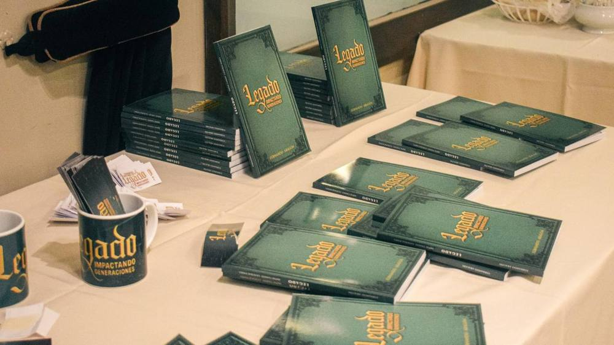

Todos los artículos
Reflexiones &
Enseñanzas
Apostolado
El tiempo de los apóstoles: por qué el mundo necesita este ministerio hoy
Familia
La familia como primer ministerio
Liderazgo
Cómo encontrar un mentor apostólico
Generaciones
Qué legado estamos dejando

Liderazgo
Cómo encontrar un mentor apostólico

Identidad
El hombre que Dios está levantando

Generaciones
Qué legado estamos dejando

Iglesia
La iglesia que el mundo necesita ver

Fe
Cuando la fe supera al miedo